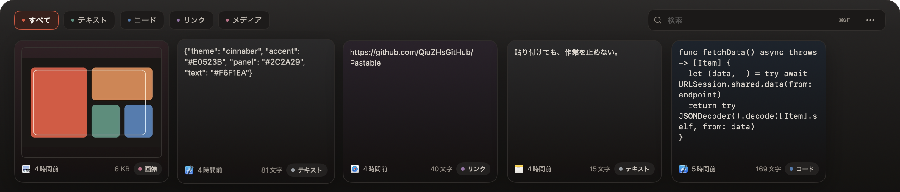

PASTABLE · MACOS クリップボード棚
呼び出してすぐ貼る。
作業を止めない。
画面下に全幅で現れる棚。
開いてもキーボードフォーカスを奪わず、カーソルは文書に残ります。
⌘⇧V
いつでも呼び出し
Q4 LAUNCH / DRAFT 03
リリース計画
クリップボードの往復を、一度の呼び出しに。ショートカットを押せば、最後にコピーしたものが画面下に現れます。
今週
- ホームページ：作業を止めない
- 木曜までに 1.2.1 を提出
メモ：公開前にもう一度3秒テスト。
キーボードフォーカスはここ
